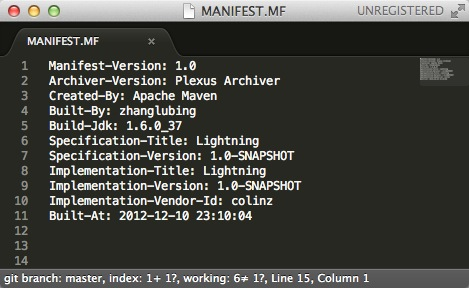

使用Maven定制MANIFEST.MF文件
对于Java开发者来说，对MANIFEST.MF文件应该不陌生，至少有所耳闻。我们打开任何一个jar包，都会看到一个METE-INF目录，该目录下必然有一个MANIFEST.MF文件，这个文件是用来描述当前jar文件的信息。
举个例子，下面是我们常使用的c3p0-0.9.1.2.jar文件里的MANIFEST.MF内容：
Manifest-Version: 1.0
Ant-Version: Apache Ant 1.7.0
Created-By: 1.5.0_07-87 ("Apple Computer, Inc.")
Extension-Name: com.mchange.v2.c3p0
Specification-Vendor: Machinery For Change, Inc.
Specification-Version: 1.0
Implementation-Vendor-Id: com.mchange
Implementation-Vendor: Machinery For Change, Inc.
Implementation-Version: 0.9.1.2
它看起来简单明了，我就不多解释了。当然，不同的jar包里的内容可能完全不同，比如说Springframwork的那些jar文件，内容不但多了许多，而且名称也都变得不同。
我曾经参与的一个Web项目中，有一个需求是在页面某个位置显示代码构建的时间，看起来差不多是这样的：
Build At: 2012-12-10 23:54:22
（当时的情况还要求显示代码的版本号，具体做法本文先略过。）
当时就是采用定制MANIFEST.MF（加入构建时间戳），并用程序读取该时间戳实现的！ 接下来就结合该需求说说在使用Maven构建的项目中，如何为MANIFEST.MF增加自定义内容，并完成该功能。
首先，在pom.xml文件中增加属性：
<properties>
<maven.build.timestamp.format>yyyy-MM-dd HH:mm:ss</maven.build.timestamp.format>
</properties>接下来配置maven-war-plugin插件，在configuration里增加archive节点，配置如下：
<plugin>
<groupId>org.apache.maven.plugins</groupId>
<artifactId>maven-war-plugin</artifactId>
<version>2.1.1</version>
<configuration>
<archive>
<manifest>
<addDefaultImplementationEntries>true</addDefaultImplementationEntries>
<addDefaultSpecificationEntries>true</addDefaultSpecificationEntries>
</manifest>
<manifestEntries>
<Built-At>${maven.build.timestamp}</Built-At>
</manifestEntries>
</archive>
</configuration>
</plugin>这样，当你再次打包工程时，新打包的文件里的MANIFEST.MF就会包含构建时间，如图：

PS：你还可以增加更多内容，只需要在manifestEntries节点中增加key-value值就OK啦。最后一步：你需要写一小段代码来获取该构件时间，把它显示在你的页面上。
或许你已经知道大名鼎鼎的框架Springframework获取版本号的代码是这样的(详见SpringVersion.java)：
public static String getVersion() {
Package pkg = SpringVersion.class.getPackage();
return (pkg != null ? pkg.getImplementationVersion() : null);
}但很遗憾这种方式在Web项目中不起作用。因为为Web应用编写的Java代码，会编译为class文件并放在$WEBROOT/WEB-INF/classes目录下，而war包的MANIFEST.MF文件位于$WEBROOT/META-INF目录下，它们不在同一个“包”下。事实上，Package类根本没有提供任何获取自定义值的方法（哈哈哈），详见Package.html。
所以 --- 是时候自己动手了。